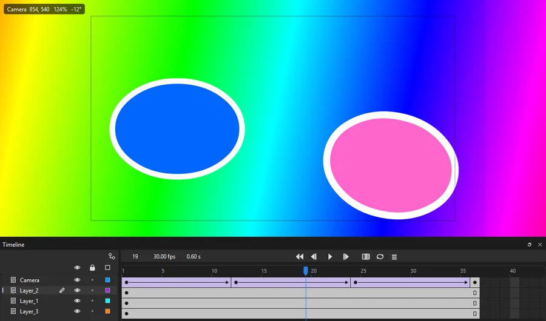
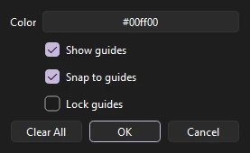
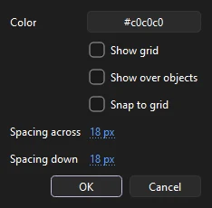
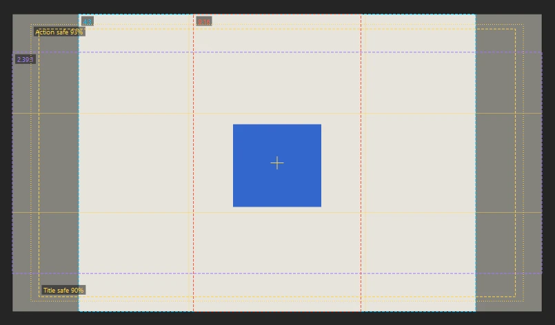
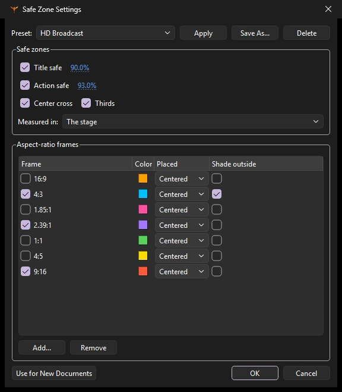
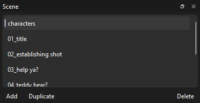

Workspace
Stage, zoom and view
How to move around your artwork, line things up precisely, and control what the stage shows. These are view settings, except guides, the grid and the guide and object snap settings, which are saved with the document.
The stage and pasteboard
The stage is the rectangle in the middle of the window: what a movie or image export shows, at the size and color set on the Doc tab of the Properties panel or in (Ctrl+J). Around it is the pasteboard, where artwork can wait off screen, ready to walk on, without being seen in the export.
- (Ctrl+Shift+W) shows or hides the pasteboard and what is on it.
- Dim Outside Document darkens it, and Clip Content Outside Stage hides what is on it; see Display options.
- (Ctrl+3) zooms out to everything, on the stage and off it, which is how to find artwork that has wandered far away.
Zoom
| Action | How |
|---|---|
| Zoom in or out | Ctrl+= and Ctrl+-, or Ctrl with the mouse wheel, which zooms around the cursor |
| Fit the stage in the window | Ctrl+2 |
| Show all artwork, including off stage | Ctrl+3 |
| Actual size | Ctrl+1 |
| 400% and 800% | Ctrl+4 and Ctrl+8 |
| Other set sizes | : 25%, 50%, 100%, 200%, 400%, 800% |
| Any size | Type a percentage, from 5% to 10000%, in the zoom box on the edit bar and press Enter |
The stage controls
The right end of the edit bar, the strip above the stage that shows which scene or symbol you are editing, holds the view controls you reach for most:
- Center Stage
- Brings the stage to the middle of the view, keeping the zoom.
- Rotation
- Picks the Rotation tool. While the view is turned, the button shows the angle beside its icon, and clicking it sets the view straight again.
- Content outside the stage
- The button's icon shows the current mode; click it to choose Show, Dim or Clip Content Outside Stage for artwork on the pasteboard. These are the same settings as Dim Outside Document and Clip Content Outside Stage in the View menu, and Phoenix remembers them. Exports are not affected.
- Zoom box
- Shows the current zoom and follows every other way of zooming. Type a percentage, or use its arrows (or the Up and Down keys) to step through 8%, 25%, 50%, 100%, 200%, 400%, 800%, 1600% and 3200%. The arrow button beside it opens a menu with Fit in Window and Show Frame (both fit the stage in the view), Show All, and 25% to 800%.
The Zoom tool
Press Z for the Zoom tool. Click to zoom in two times at that point, Alt-click to zoom out, or drag a rectangle to zoom to exactly that area.
Pan
- The mouse wheel scrolls up and down; Shift with the wheel scrolls sideways.
- Hold Space and drag with any tool, or drag with the middle mouse button.
- Use the Hand tool (H) and drag.
Rotate the view
Turning the canvas makes it easier to draw natural strokes at any angle. The Rotation tool (Shift+H) shares a slot with the Hand tool.
- Click to set the point to turn around, then drag to turn the view.
- Hold Shift to turn in 15° steps.
- Double-click with the tool, click the angle shown on the edit bar, or choose , to straighten the view again.
Rotating the view never rotates your artwork. Rulers are hidden while the view is turned.
Scrub through time on the stage
The Time Scrub tool, also in the Hand tool's slot, moves the playhead as you drag left and right across the stage, one frame for every few pixels. It is a quick way to check motion without reaching for the timeline.
The camera
A scene can be filmed through a camera, which pans, zooms and turns over the artwork without moving it. Your view of the stage (zoom, scroll and rotation) is separate: it never changes what is exported, while the camera does.

The Camera tool (C), the last in the Hand tool's slot, moves the scene's camera rather than your view of it: drag to pan, Shift-drag to zoom in and out, and Alt-drag to turn it about the middle of the stage. Each move is keyed on the frame shown, so the camera animates from one key to the next. If the scene has no camera yet, the first drag adds one (as does).
Phoenix's own camera is a layer named Camera at the top of the scene, running its full length; a scene has one camera. Its keyframes hold the camera's place, zoom and turn, and tween from one to the next. While the Camera tool is in use, the Tool tab of the Properties panel shows Phoenix's camera's keyframe at the playhead: its position, zoom and turn, and its color effect. Layers can sit at depths behind or in front of the stage, for parallax: see Multiplane camera. Other FLA editors see Phoenix's camera layer as a guide layer, so they show the scene without it.
With on, as it is by default, the stage shows the scene through its camera. Turn it off to see the scene as laid out, without the camera's moves. For layers at different depths from the camera, see Multiplane camera, or follow the Multiplane camera tutorial.
An FLA file's own camera layer, made in another app, plays the same way: its pans, zoom (about the middle of the stage), turns and color effect, tweened between its keyframes, in the view and in every export. A layer attached to that camera stays where it is drawn, neither moved nor colored, as a title or a frame over the shot does. The Camera tool moves that camera, keying its keyframes as the file keeps them, so the file opens again with the moves made in Phoenix. An SWF movie gets a scene filmed by a camera as frames of shapes.
Rulers and guides
Turn on rulers with (Ctrl+Alt+Shift+R). Rulers measure from the stage's top-left corner, in the units set in (Ctrl+J), pixels unless you change them.
- Drag from the top ruler to create a horizontal guide, or from the left ruler for a vertical one.
- Drag a guide with the Selection tool to move it.
- Drag it back onto a ruler, or out of the view, to remove it.
Guides are saved with the document, and creating, moving or removing one can be undone. The menu has:


- Show Guides
- Ctrl+;. Hides guides without deleting them.
- Snap to Guides
- Ctrl+Shift+;. Artwork snaps to guides as you drag it.
- Lock Guides
- Ctrl+Alt+;. Guides stay where they are while you work near them. Phoenix remembers this for every document, rather than saving it in one.
- Edit Guides...
- Ctrl+Alt+Shift+G. The guides' color, whether they show, snap and are locked, and Clear All. The color is saved with the document.
- Clear Guides
- Removes every guide. This can be undone too.
For drawing, Phoenix also has drawing guides: rulers, ellipses and perspective grids that freehand strokes snap to, under View > Drawing Guides, and a symmetry axis that copies your strokes as you draw, under View > Symmetry.
Grid and snapping
Snapping helps you place artwork exactly. While snapping is happening, a small ring appears under the cursor at the point it snapped to. Each kind is turned on and off in the View menu (Snap to Guides is under ):
| Option | Default | Snaps to |
|---|---|---|
| Snap to Objects | On | The corners, edges and centers of other artwork, and the stage's (Ctrl+Shift+/); a scale handle also snaps to shapes' anchor points and outlines |
| Snap to Guides | On | Ruler guides |
| Snap to Grid | Off | The document grid (Ctrl+Shift+'). Use Show Grid (Ctrl+') to see it. |
| Snap to Pixels | Off | Whole pixels, for crisp artwork at 100% |
(Ctrl+Alt+G) sets the grid's color and its spacing across and down in pixels, saved with the document, and whether it shows, shows over the artwork instead of under it, and snaps.
Snapping shows only the ring at the point snapped to; Phoenix draws no alignment lines between objects as you drag. To line objects up exactly after placing them, use the Align panel (Ctrl+K). Snapping to objects matches edges and centers but has no settings for a gap to keep between them.
Safe zones and aspect-ratio frames
When a shot has to work on several screens at once, safe zones and aspect-ratio frames show where each screen's edges fall. Turn them on with , or the safe zones button among the stage controls on the edit bar. Whether they show is your choice and Phoenix remembers it; what they are belongs to the document, so a show's template carries them to every shot.

- Title safe and action safe
- Dashed and dotted rectangles inset about the center: 90% and 93% unless you change them. Keep text inside title safe and anything important inside action safe.
- Center cross and thirds
- A small cross at the center, and lines dividing the frame in thirds for composing.
- Aspect-ratio frames
- The largest rectangle of each shape that fits on the stage: 16:9, 4:3, 1.85:1, 2.39:1, 1:1, 4:5 and 9:16 to start with, and any shape you add. Each has its own color, sits centered or against an edge, and can shade the stage outside it to preview the crop. Turn them on and off from .
The overlay is never selected, saved into the artwork or exported, unless an export asks for it. While it shows, the tools snap to its edges when Snap to Guides is on.
Safe Zone Settings

sets everything at once, and the stage shows each change as you make it. Cancel puts it all back; OK keeps it as one step you can undo.
- Measured in puts the safe zones, cross and thirds inside one of the frames rather than the stage, so a 16:9 show can check 4:3 title safe too.
- Add... adds a frame of any shape, such as
3:2or1.66:1; Remove takes one out. - Preset offers HD Broadcast, Cinema, Social and Clear. Apply sets everything from the one chosen; Save As... keeps your settings as a preset of your own, and Delete removes one.
- Use for New Documents makes these the settings every new document starts with.
To include the overlay in a review copy, check Include safe zones in Export Movie or Export Image, or add --safe-zones to a render or a render queue job.
Display options
- Clip Content Outside Stage
- Hides whatever lies off the stage, so you see the frame as a stage-sized export shows it. Phoenix remembers this setting.
- Pasteboard
- On by default. Turn it off to show only the stage, with nothing around it.
- Center Stage
- Brings the stage to the middle of the view, keeping the zoom. Also a button on the edit bar.
- Dim Outside Document
- Darkens the pasteboard so you can judge what is on the stage. Artwork off the stage still draws, so you can grab it. Phoenix remembers this setting.
- High Quality Anti-Aliasing
- On by default. Turn it off to draw faster in very heavy scenes.
- Hide Edges
- Ctrl+H. Hides the selection's highlight, the dot pattern and outlines, so you see the art as it is while it stays selected. Choose it again to show them.
- Show Shape Hints
- Ctrl+Alt+H. On by default: shows the lettered shape hints of a shape tween on its keyframes. Turn it off to see the shapes without them; the hints still steer the tween.
- Show Bounding Boxes
- Ctrl+Alt+Shift+B. Outlines each element's bounds, which helps track down a stray point far from the artwork.
- Onion Skin
- See Onion skinning.
- Light Table
- Shift+L. Fades every layer except the one you are drawing on. See Light table.
- View Document...
- Opens the read-only Document Source window, showing the document's XML (
DOMDocument.xml) as saving would write it, for troubleshooting.
Scenes

A document can be split into scenes, which play one after another. Phoenix shows one scene at a time; playback runs on from each scene into the next, switching the scene shown as it goes. Switch scenes from or the panel (Shift+F2), or press Shift+Page Up and Shift+Page Down for the previous and next scene. The current scene's name appears in the edit bar above the stage. To add, rename, reorder and delete scenes, see Scenes; to export every scene at once, see Export Movie.
In short: click a scene in the panel to edit it, Add (or ) puts an empty one after the current one, Duplicate copies it, drag to reorder, double-click to rename, and Delete removes the current scene after asking. Each scene has its own timeline and its own camera; the library is shared by all of them. Test Movie plays the scenes in turn, and a script can jump between them.